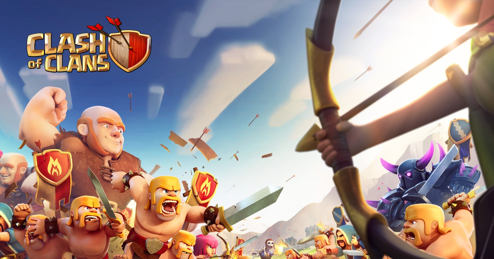

Outside of school. and on the school team, I play soccer. Soccer is one of my favorite hobbies, and it is a great thing to play and watch in my free time.
This is not a console game, it is a mobile game, but it is another one of my hobbies that I get back into every couple iof months or so. This game is just as fun as any console game, and it is a mobile game.